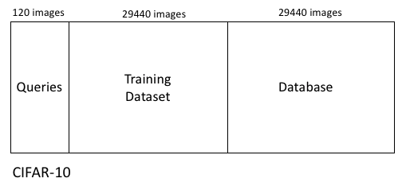
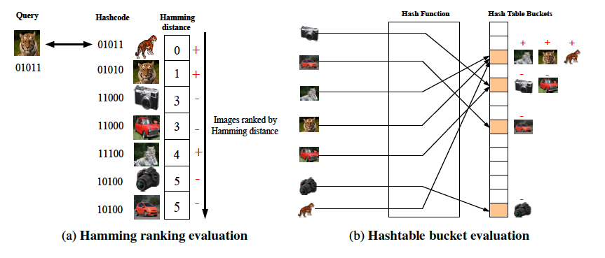
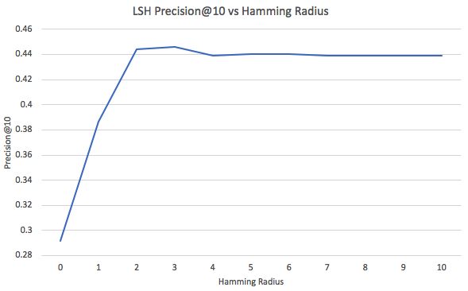
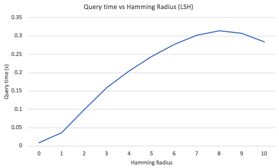

This tutorial on learning to hash was written by Sean Moran. If you enjoyed this tutorial or found it useful please share and do drop me a message!
In this tutorial we explore a learning to hash model and compare its performance to Locality Sensitive Hashing (LSH).
Specifically we will implement the Graph Regularised Hashing (GRH) model of Moran and Lavrenko, a simple but empirically effective supervised hashing model for learning to hash. The citation bibtex can be found here.
The original Matlab code supplied by Moran and Lavrenko can be found here. We will code up a version of the model in Python 3. This tutorial will train the model on the CIFAR-10 dataset and benchmark the retrieval effectiveness against LSH (random projections) using the precision at 10 metric and semantic nearest neighbour evaluation.
First step is to instantiate a virtual environment for Python3:
python3 -m venv ./hashing_tutorial source hashing_tutorial/bin/activate
We retrieve and pre-process the CIFAR-10 dataset as follows:
import scipy.io
import os
import requests
url='https://www.dropbox.com/s/875u1rkva9iffpj/Gist512CIFAR10.mat?dl=1'
response = requests.get(url)
with open(os.path.join("./", "Gist512CIFAR10.mat"), 'wb') as f:
f.write(response.content)
mat = scipy.io.loadmat('./Gist512CIFAR10.mat')
data = mat['X']
classes = mat['X_class']
The above code should download and save the CIFAR-10 dataset pre-processed into GIST features to the current directory. We will now generate 16 random hyperplanes and project one image onto these hyperplanes, generating the hashcode:
import numpy as np
num_classes = 10
n_vectors = 32
dim = 512
np.random.seed(0)
random_vectors = np.random.randn(dim, n_vectors)
print(random_vectors)
print('dimension:', data[0,:].shape)
bin_indices_bits = data[0,:].dot(random_vectors) >= 0
print(bin_indices_bits)
# [False True False True False True False False False False True True True False False False]
The last line of code prints out the hashcode assigned to this image. Images with the exact same hashcode will collide in the same hashtable bucket. We would like these colliding images to be semantically similar i.e. have the same class label.
We now convert the boolean representation above into an integer representation that will denote the bin indices:
# https://wiki.python.org/moin/BitwiseOperators # x << y is the same as multiplying x by 2 ** y powers_of_two = 1 << np.arange(n_vectors - 1, -1, step=-1) print(powers_of_two) # [32768 16384 8192 4096 2048 1024 512 256 128 64 32 16 8 4 2 1] bin_indices = bin_indices_bits.dot(powers_of_two) print(bin_indices) # 21560
The example image will hash into hashtable bucket with index 21560. Now we will hash the entire dataset using matrix operations:
bin_indices_bits = data.dot(random_vectors) >= 0 print(bin_indices_bits.shape) bin_indices = bin_indices_bits.dot(powers_of_two) bin_indices.shape
bin_indices now contains 60,000 bin indices, one for each of the 60,000 images in the CIFAR-10 dataset. We now insert these images into a hashtable and inspect the duplicates:
from collections import defaultdict table = defaultdict(list) for idx, bin_index in enumerate(bin_indices): table[bin_index].append(idx) for bucket,images in table.items(): if len(images)>1: print(images)
The code above will print out the buckets of the hashtable with at least two images and the associated IDs (i.e. row numbers in the original .mat file) of the images in each bucket. The average bin count is ~51 images, so there has been many collisions of images into buckets. Next we will inspect some of the buckets to gain an understanding of the quality of the hashing with LSH:
# We take this bucket and inspect the images: # [46262, 46488, 47724, 59147, 59462, 59572] print(classes.shape) print(classes[:,46262]) # 3 print(classes[:,46488]) # 8 print(classes[:,47724]) # 7 print(classes[:,59147]) # 9 print(classes[:,59462]) # 2 print(classes[:,59572]) # 8
On this particular example we can see that LSH does fairly poorly, with only two semantically related images (class 8), colliding in the same bucket. We will inspect another bucket before moving on:
# We take this bucket and inspect the images: # [16380, 18515, 27324, 33419, 43442, 46613, 54356] print(classes.shape) print(classes[:,16380]) # 0 print(classes[:,18515]) # 8 print(classes[:,27324]) # 0 print(classes[:,33419]) # 0 print(classes[:,43442]) # 0 print(classes[:,46613]) # 0 print(classes[:,54356]) # 0
In this case we see that LSH performs very well, with most of the colliding images coming from the same class label (0).
We now quantify the semantic retrieval effectieness of LSH more formally using the precision at search radius 10 as the number of hashcode bits are varied. Precision at 10 measures how many of the 10 retrieved nearest neighbours for a query are of the same class as the query. Firstly we split the dataset up into a set of queries, a training dataset to learn any parameters and a held-out database that we perform retrieval:
from sklearn.model_selection import train_test_split np.random.seed(0) data_temp, data_query, labels_temp, labels_query = train_test_split(data, classes[0,:], test_size=0.002, random_state=42) data_database, data_train, labels_database, labels_train = train_test_split(data_temp, labels_temp[:], test_size=0.02, random_state=42)
This code will give 120 random queries that we will use alongside the LSH search index to find nearest neighbours. The database consists of 58682 images, and the training dataset contains 1198 images.

To prevent overfitting we maintain a held-out database that we perform retrieval against using the set of 120 queries. The training dataset is used to learn any parameters and hyperparameters required by the models.
We now index the database portion with LSH creating our hashtable:
bin_indices_bits = data_database.dot(random_vectors) >= 0
bin_indices = bin_indices_bits.dot(powers_of_two)
table = defaultdict(list)
for idx, bin_index in enumerate(bin_indices):
table[bin_index].append(idx)
To search for nearest neighbours we apply a Hamming radius based search:

Hamming radius based search for a radius of zero is shown in Figure (b) in the above diagram (taken from the PhD thesis of Sean Moran).
In a nutshell this search methodology works by also looking in the collding bin and nearby bins that different from the current bin by a certain number of bits, up to a specific maximum radius. We can use the itertools combinations function to enumerate all the bins that differ from the current bin with respect to a certain number of bits, up to a maximum radius of 10 bits. As well as returning neighbours in the same bin, we also return neighbours from the nearby bins.
from itertools import combinations
from sklearn.metrics.pairwise import pairwise_distances
import pandas as pd
import time
max_search_radius=10
topn=10
precision_history = {i: [] for i in range(max_search_radius+1)}
time_history = {i: [] for i in range(max_search_radius+1)}
for query_image, query_label in zip(data_query,labels_query):
bin_index_bits = np.ravel(query_image.dot(random_vectors) >= 0)
candidate_set = set()
for search_radius in range(max_search_radius + 1):
start = time.time()
n_vectors = bin_index_bits.shape[0]
for different_bits in combinations(range(n_vectors), search_radius):
index = list(different_bits)
alternate_bits = bin_index_bits.copy()
alternate_bits[index] = np.logical_not(alternate_bits[index])
nearby_bin = alternate_bits.dot(powers_of_two)
if nearby_bin in table:
candidate_set.update(table[nearby_bin])
# sort candidates by their true distances from the query
candidate_list = list(candidate_set)
if candidate_list:
candidates = data_database[candidate_list[:]]
ground_truth = labels_database[candidate_list[:]]
distance = pairwise_distances(candidates, query_image.reshape(1,-1), metric='cosine').flatten()
distance_col = 'distance'
nearest_neighbors = pd.DataFrame({'id': candidate_list, 'class': ground_truth, distance_col: distance}).sort_values(distance_col).reset_index(drop=True)
candidate_set_labels = nearest_neighbors.sort_values(by=['distance'], ascending=True)['class'][:10]
precision = list(candidate_set_labels).count(query_label) / topn
precision_history[search_radius].append(precision)
end = time.time()
elapsed_time=end - start
print(elapsed_time)
time_history[search_radius].append(elapsed_time)
mean_time = [np.mean(time_history[i]) for i in range(len(time_history))]
print(mean_time)
mean_precision = [np.mean(precision_history[i]) for i in range(len(precision_history))]
print(mean_precision)
The above code will produce a mean precision@10 of 0.42 for a radius of 2. As we increase the Hamming radius we increase the quality of the retrieval, at the expense of checking many more candidate nearest neighbours. This means that, on average, given a list of 10 returned images, 40% of those will be relevant to the query when we use a Hamming radius of 2. This is reasonable performance, especially since the hyperplanes were generated randomly!

As the Hamming radius increases from 0 to 10 we start retrieving more and more images from the database in our candidate set, and this leads to a corresponding sharp increase in the query time which will approach a standard brute force search time (~48 seconds) when the candidate set equals the entire database.

We now investigate how learning the hyperplanes (i.e. learning to hash) can afford a much higher level or retrieval effectiveness. To recap we will be developing the supervised learning to hash model Graph Regularised Hashing.
Our first step is to use the training dataset to construct an adjacency matrix that GRH will use as its supervisory signal for learning the hashing hyperplanes. If two images share the same class label they have adjacency_matrix[i,j]=1 and adjacency_matrix[i,j]=0 otherwise. In Python we can construct this adjacency matrix from the class label vector:
adjacency_matrix=np.equal.outer(labels_train, labels_train).astype(int) row_sums = adjacency_matrix.sum(axis=1) adjacency_matrix = adjacency_matrix / row_sums[:, np.newaxis]
We now implement the two-step Graph Regularised Hashing (GRH) model of Moran and Lavrenko, which is reminiscent of the expectation maximisation (EM) algorithm.
In the first step the adjacency matrix is matrix multiplied by the hashcodes of the training dataset images. This multiplication has the effect of adjusting the hashcodes of the training database images such that semantically similar images have their hashcodes made more similar to each other. In the second step those refined hashcodes are used to update the hyperplanes: to do this an SVM is learnt per hash bit using the bits as targets.
In essence, GRH takes the LSH hyperplanes in random_vector as an initialisation point and iteratively updates those hyperplanes so as to make them more effective for hashing. The entire GRH model is implemented below:
n_iter=5 # number of iterations of GRH
alpha=0.5 # how much to update the hashcodes based on the supervisory information
for i in range(0,n_iter):
bin_indices_bits = (data_train.dot(random_vectors) >= 0).astype(int)
bin_indices_bits[bin_indices_bits==0]=-1
bin_indices_bits_refined=np.matmul(adjacency_matrix,bin_indices_bits.astype(float))
bin_indices_bits_refined=(bin_indices_bits_refined >=0).astype(int)
bin_indices_bits_refined[bin_indices_bits_refined<=0]=-1
bin_indices_bits = (0.5*bin_indices_bits_refined.astype(float) + 0.5*bin_indices_bits.astype(float))
bin_indices_bits=(bin_indices_bits >=0).astype(int)
bin_indices_bits[bin_indices_bits<=0]=-1
grh_hyperplanes = random_vectors.copy()
for j in range(0,n_vectors):
if abs(sum(bin_indices_bits[:,j]))==data_train.shape[0]:
# In case all bits are the same we generate a new random vector
random_vector = np.random.randn(dim, 1)
grh_hyperplanes[:,j]=random_vector[:,0]
else:
hyperplane=svclassifier.fit(data_train, bin_indices_bits[:,j]).coef_
hyperplane=np.array(hyperplane)
grh_hyperplanes[:,j]=hyperplane
random_vectors = grh_hyperplanes.copy()
Acknowledgement: Parts of this tutorial were inspired by the text-based LSH tutorial here.